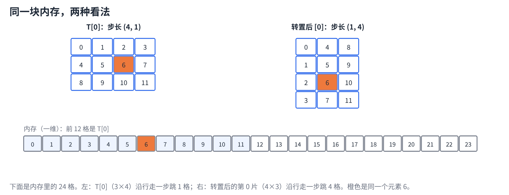
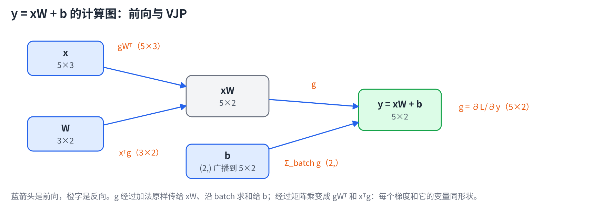
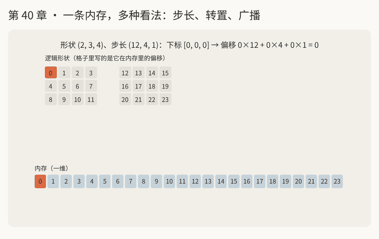

第 40 章 · 张量的数学：步长与地址、视图与连续性、广播、einsum、计算图上的 VJP
本地运行
git clone https://github.com/wikieden/math-and-eval-stats
cd math-and-eval-stats/code/notebooks
pip install jupyterlab torch numpy
jupyter lab ch40_tensor_math.ipynb也可以下载后直接用 VS Code 打开 .ipynb 运行。需要 GPU 的章节在 Colab 里选「代码执行程序 → 更改运行时类型 → GPU」。
本章回答：一个多维张量在内存里是怎么摆的？为什么转置不花时间、转置后再 reshape 有时却要拷贝？广播的规则是什么，背后是怎么实现的？einsum 那串字母怎么读？反向传播时每一步的梯度形状是怎么定下来的？
讲解日期：2026-11-25 · 上一章：第 39 章 归一化与信号传播 · 下一章：第 41 章 Scaling law
对应原文：《PyTorch 从里到外》第 2 章 Tensor 与 stride、第 4 章 autograd、第 11 章 形状与广播（互引）；Baydin 自动微分综述math-and-eval-stats/materials/text/papers/autodiff-survey-1502.05767.txt§3.2（反向模式）
本章缩写：stride = 步长（某一维下标加 1，内存地址前进几个元素）；contiguous = 连续（按行优先紧密排列）；view = 视图（共享同一块内存、只是形状 / 步长不同）；einsum = Einstein summation（爱因斯坦求和约定）；VJP = Vector-Jacobian Product（向量-雅可比积）；B、H、N、d = batch、头数、序列长度、每头维度。全部缩写见 附录 · 缩写与术语表
讲解
第一步：步长：多维下标 → 一维地址（2026-11-25）
类比：电影院的座位号。 "第 3 排第 5 座"换成票上的一个数字：排号 × 每排座位数 + 座号。
内存是一维的。形状 (2, 3, 4) 的张量按行优先（最后一维变化最快）连续排列时，步长是 (12, 4, 1)：
例子：T = arange(24).reshape(2, 3, 4)，T[1, 2, 3] 的偏移 1 × 12 + 2 × 4 + 3 × 1 = 23，值就是 23。
形状 + 步长 + 起始偏移，三样东西就完全描述了一个张量怎么读内存（PyTorch 第 2 章）。
一句话：地址 = 起点 + Σ 下标 × 步长；连续张量的步长从右往左累乘维度大小。
第二步：视图与连续性：转置只改步长，不搬数据（2026-11-25）
转置、切片、expand 都只改形状和步长，返回视图（和原张量共享内存，O(1)）。
例子：
| 操作 | 形状 | 步长 | 连续 | 共享内存 |
|---|---|---|---|---|
| T | (2, 3, 4) | (12, 4, 1) | 是 | — |
| T.transpose(0, 2, 1) | (2, 4, 3) | (12, 1, 4) | 否 | 是 |
| 再 reshape(2, 12) | (2, 12) | — | — | 否（拷贝了） |
| T.transpose(2, 0, 1).reshape(4, 6) | (4, 6) | — | — | 是 |
reshape 能不能不拷贝，看要合并的那几维能不能用一个步长描述：合并相邻两维 (n₁, n₂)、步长 (s₁, s₂)，要求 s₁ = n₂·s₂。第一种情况要合并的是步长 (1, 4) 的两维，1 ≠ 3 × 4，只能拷贝；第二种合并的是步长 (12, 4)、大小 (2, 3)，12 = 3 × 4，可以。PyTorch 的 view 在不能不拷贝时直接报错，reshape 会悄悄拷贝，.contiguous() 显式拷贝成连续的。

图 40-1 · 下面是内存里的 24 个格子；上左是 T（2×3×4）的第 0 片按行读，上右是 T.transpose(0, 2, 1) 的第 0 片按行读：沿行走一步，原来跳 1 格，转置后跳 4 格为什么关心：非连续张量喂给很多 kernel 时要先拷贝；注意力里 transpose(1, 2) 之后的 view 报错就是这个原因。
一句话：转置、切片是只改步长的视图；合并维度要求步长能“接上”（s₁ = n₂s₂），接不上就得拷贝。
第三步：广播：右对齐，1 可以拉伸（2026-11-25）
规则：把两个形状右对齐；每一维要么相等，要么有一个是 1（或缺失）；结果取较大的那个。
例子：
| a | b | 结果 |
|---|---|---|
| (3, 1) | (4,) | (3, 4) |
| (8, 1, 6, 1) | (7, 1, 5) | (8, 7, 6, 5) |
| (2, 3) | (3, 2) | 不能广播：2 和 3 |
实现：被拉伸的那一维步长设成 0：同一个数被反复读，不真的复制。(3, 1) 广播成 (3, 4) 后步长 (1, 0)。
反向：前向被广播（复制）的维度，反向要把梯度求和回去（第五步的偏置梯度就是这样）。
一句话：广播右对齐、1 可拉伸，实现上是步长 0；反向时被拉伸的维度要把梯度加回去。
第四步：einsum：用下标说清楚哪些维相乘、哪些维求和（2026-11-25）
规则：箭头左边每个输入一组下标；在输出里出现的下标保留，没出现的求和；同一个下标的维度对齐相乘。
| einsum | 等价写法 |
|---|---|
"ij,jk->ik" |
矩阵乘 |
"ii->" |
迹 |
"i,j->ij" |
外积 |
"bhqd,bhkd->bhqk" |
注意力打分 QKᵀ（b、h 保留，d 求和） |
"bhqk,bhkd->bhqd" |
打分乘 V（k 求和） |
例子（B = 2、H = 4、N = 8、d = 16）：注意力两个 einsum 和“转置 + matmul”写法的最大差 1.1 × 10⁻¹⁴；乘加次数 2·B·H·N²·d = 16,384：一眼就能从下标读出复杂度（所有出现过的下标大小相乘）。
一句话：einsum 的下标就是求和公式：出现在输出里的保留、没出现的求和，复杂度是所有下标大小的乘积。
第五步：计算图上的 VJP：梯度的形状和输入一样（2026-11-25）
反向传播每一步算的是 VJP：上游梯度 g（形状和输出一样）乘这一步的雅可比，得到对输入的梯度（形状和输入一样），不显式构造雅可比（第 13 章，Baydin §3.2）。
例子（y = xW + b，x 是 5×3、W 是 3×2、b 是 (2,)，上游梯度 g 是 5×2）：
| 对谁 | VJP | 形状 |
|---|---|---|
| x | g Wᵀ | 5×3 |
| W | xᵀ g | 3×2 |
| b | g 沿 batch 求和 | (2,)（b 被广播到 5 行，第三步） |
和有限差分比，三者最大误差 2.5 × 10⁻¹⁰、3.6 × 10⁻¹⁰、1.7 × 10⁻¹⁰。
记法：形状对不上时，转置哪个、放哪边，只要让结果的形状等于被求导的那个变量即可；广播过的维度求和。

图 40-2 · 前向（左到右，蓝）：x、W 矩阵乘，再加广播的 b；反向（右到左，橙）：g 分别变成 gWᵀ、xᵀg 和 Σ_batch g，每个梯度的形状和对应的变量一样场景代码：用 einsum 写一个多头注意力（PyTorch 写法；本书环境没装 torch，没跑过）：
q, k, v = (t.view(B, N, H, d).transpose(1, 2) for t in (q, k, v)) # (B, H, N, d)，非连续视图
s = torch.einsum("bhqd,bhkd->bhqk", q, k) / d ** 0.5
o = torch.einsum("bhqk,bhkd->bhqd", s.softmax(-1), v)
o = o.transpose(1, 2).reshape(B, N, H * d) # 这里 reshape 会拷贝（view 会报错）
一句话：VJP 的结果和被求导的变量同形状；矩阵乘的两个 VJP 是 gWᵀ 和 xᵀg，广播的偏置梯度要求和。
动画演示：内存里的一条线和它的多种“看法”

可交互版：animations/40-tensor-math.html（下拉切换“连续 / 转置 / 广播”；滑块选元素下标）。
怎么看：
- 下面一条是内存里的 24 个格子，上面是形状 (2, 3, 4) 的张量；选中一个元素，两边同时高亮，右上角写出偏移 = Σ 下标 × 步长（第一步）；
- 转置：上面的形状变成 (2, 4, 3)，选中同一个元素时内存位置不变，只是“沿哪一维走一步跳几格”变了（第二步）；
- 广播：一列 3 个数被看成 (3, 4)，同一行的 4 个格子都指向内存里同一格（步长 0，第三步）。
练习与作答记录
题 1（第一步）：形状 (4, 5, 6) 的连续张量，步长是多少？元素 [2, 3, 4] 的偏移是多少？
作答：（待作答）
题 2（第二、三步）：形状 (3, 4) 的连续张量转置成 (4, 3)，步长是多少？形状 (5, 1, 4) 和 (3, 1) 广播的结果是什么？
作答：（待作答）
题 3（第四、五步）：用 einsum 写出“批量矩阵乘” (B, M, K) × (B, K, N)，并写出 y = x @ W（x 形状 (B, M, K)，W 形状 (K, N)，W 被所有 batch 共享）时 ∂L/∂W 的 einsum。
作答：（待作答）
口诀
地址是下标乘步长加起来，连续步长从右累乘；
转置切片只改步长，合并要步长接得上，不然就拷贝；
广播右对齐，1 能拉伸步长 0，反向要求和；
einsum 留下的保留、消失的求和；
VJP 的形状和变量一样：g 乘 Wᵀ、xᵀ 乘 g。
本章复习卡片
ST133（步长、地址与连续性；reshape 什么时候拷贝）、ST134（广播规则、步长 0 与反向求和；einsum 的读法）、ST135（矩阵乘和偏置的 VJP）。练习做完后，按答错、卡住的地方补上。
附录 · 延伸阅读
留给以后深入学习用，不影响本章主线。★ 是建议先读的。
推荐阅读
| 读什么 | 读哪里 | 读它为了什么 |
|---|---|---|
| ★ 《PyTorch 从里到外》第 2 章 | 全章 | stride、视图、contiguous 的实现 |
| ★ 《PyTorch 从里到外》第 11 章 | 全章 | 形状变换与广播的 API |
| 《PyTorch 从里到外》第 4 章 | 全章 | autograd 怎么组合 VJP |
| Baydin 自动微分综述 | §3.2（反向模式） | VJP 的一般形式 |
| 第 13 章 多元微积分与自动微分 | 全章 | 雅可比、链式法则、前向 / 反向模式 |
数学原理
- 行优先步长：\(s_{n-1} = 1\)，\(s_k = s_{k+1}n_{k+1}\)；列优先（Fortran）反过来。
- 可合并条件：相邻两维能合成一维当且仅当 \(s_k = s_{k+1}n_{k+1}\)（或其中一维大小为 1）。
- 广播的反向：y = broadcast(b) 是线性映射“复制”，它的转置是“求和”，所以 VJP 是沿被复制的维度求和。
- 矩阵乘的 VJP：L = ⟨g, xW⟩ = tr(gᵀxW)，对 x 求导得 gWᵀ，对 W 得 xᵀg。
公式清单
| 公式 | 意思 |
|---|---|
| \(\text{offset} = \sum_ki_ks_k\) | 地址 |
| \(s_k = s_{k+1}n_{k+1}\) | 连续步长 / 可合并条件 |
| 右对齐，1 → 拉伸（步长 0） | 广播 |
| \(\partial L/\partial x = gW^\top\)，\(\partial L/\partial W = x^\top g\) | 矩阵乘的 VJP |
| \(\partial L/\partial b = \sum_{\text{batch}}g\) | 广播偏置的 VJP |
代码对照：把本章的数字用代码算一遍
代码在仓库本地
math-and-eval-stats/solutions/chapter-code/ch40_tensor_math.py，配套测试tests/test_ch40.py：
bash cd math-and-eval-stats/solutions/chapter-code uv run python ch40_tensor_math.py uv run pytest tests/test_ch40.py
讲义 ↔ 代码：
| 讲义 | 公式 | 写法 | 跑出来 |
|---|---|---|---|
| 第一步 步长 | 地址公式 | elem_strides(T)、offset(...) |
(12, 4, 1)、23 |
| 第二步 视图 | 共享内存 | np.shares_memory |
转置是视图，reshape 有时拷贝 |
| 第三步 广播 | 右对齐 | broadcast_shape(a, b) |
(8, 7, 6, 5) |
| 第四步 einsum | 下标 | attention_einsum() |
误差 1e-14，16,384 次 |
| 第五步 VJP | gWᵀ、xᵀg、Σg | vjp_check() |
误差 ~1e-10 |
关键几行：
tuple(s // a.itemsize for s in a.strides) # NumPy 的步长是字节，换成元素
np.einsum("bhqd,bhkd->bhqk", q, k) # 注意力打分
g @ w.T, x.T @ g, g.sum(0) # 三个 VJP
代码里才看得到的 3 件事：
- NumPy 的 strides 单位是字节：float32 每个元素 4 字节，所以要除以 itemsize；PyTorch 的
stride()直接是元素数。 np.shares_memory判断是否拷贝：比看 flags 更直接；连续与否和是否共享内存是两回事（转置后不连续但共享）。- 有限差分用中心差分、步长 1e-6：误差 O(h²) 加上舍入误差，约 1e-10；损失是线性的，所以中心差分本身没有截断误差，剩下的全是舍入。
自己改一改（不影响练习答案）：
- 把 T 换成列优先的
np.asfortranarray(T)，元素步长变成多少？T[1, 2, 3] 的偏移呢？ - 把
vjp_check里的 y 换成 y = tanh(xW)，VJP 要多乘什么？